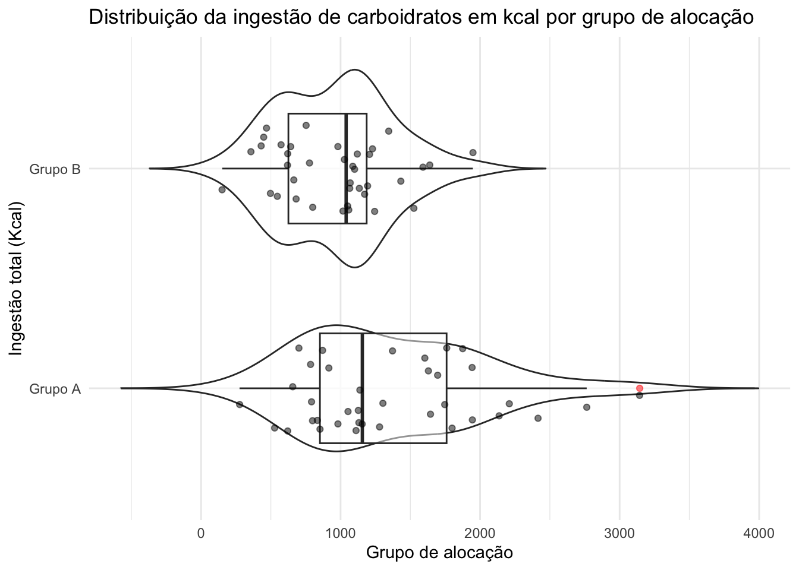
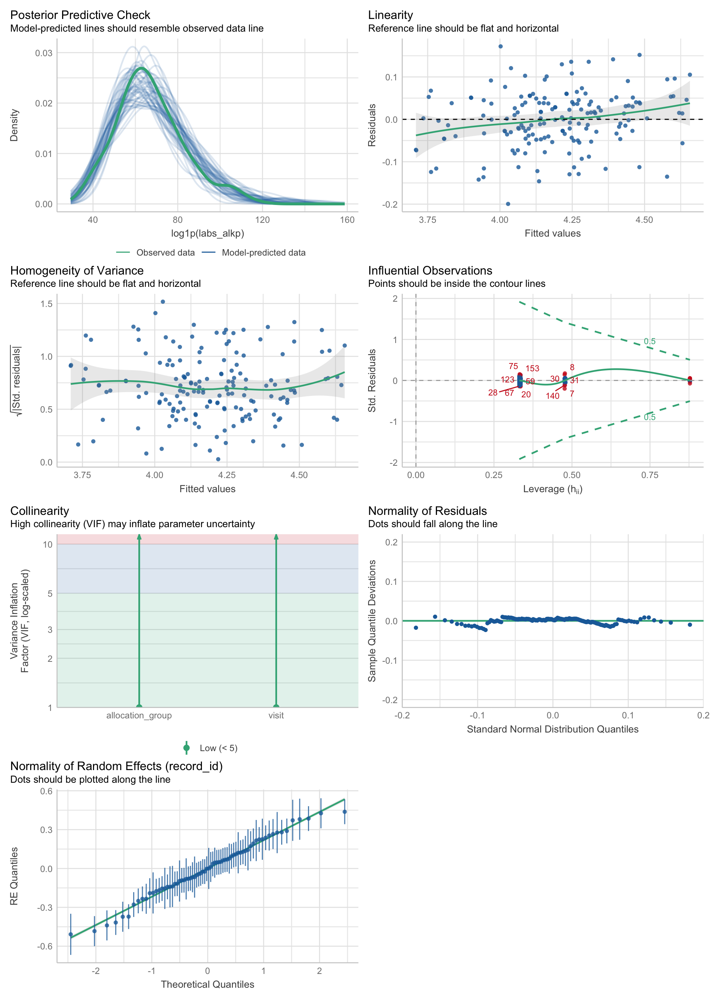
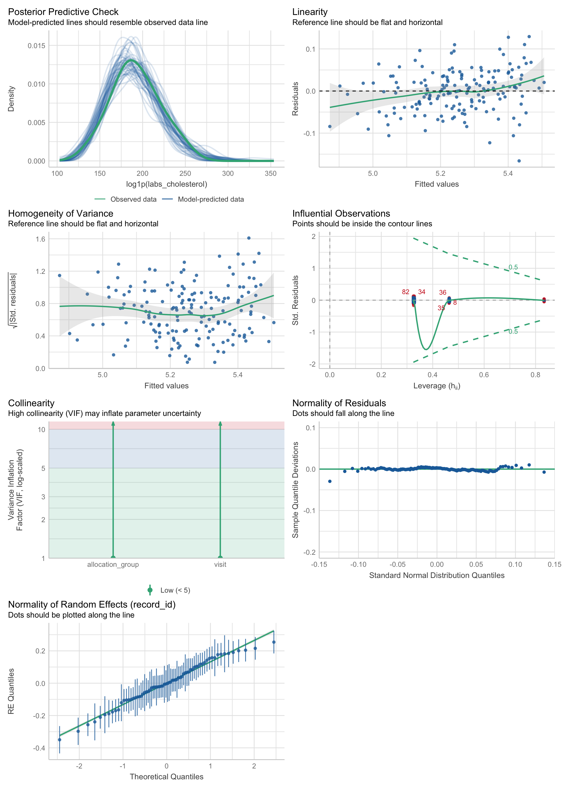
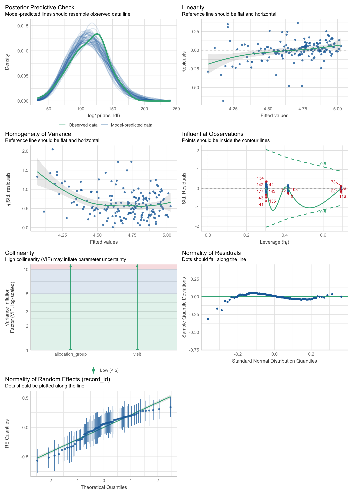
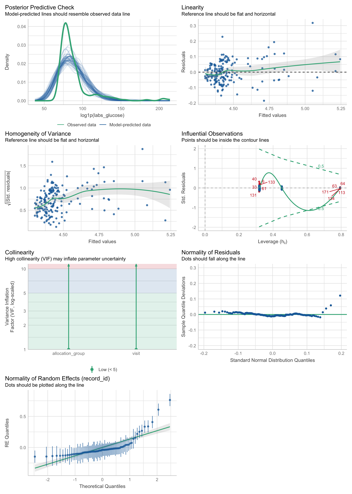
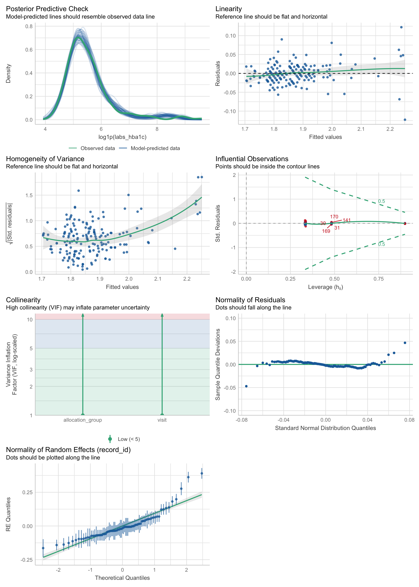
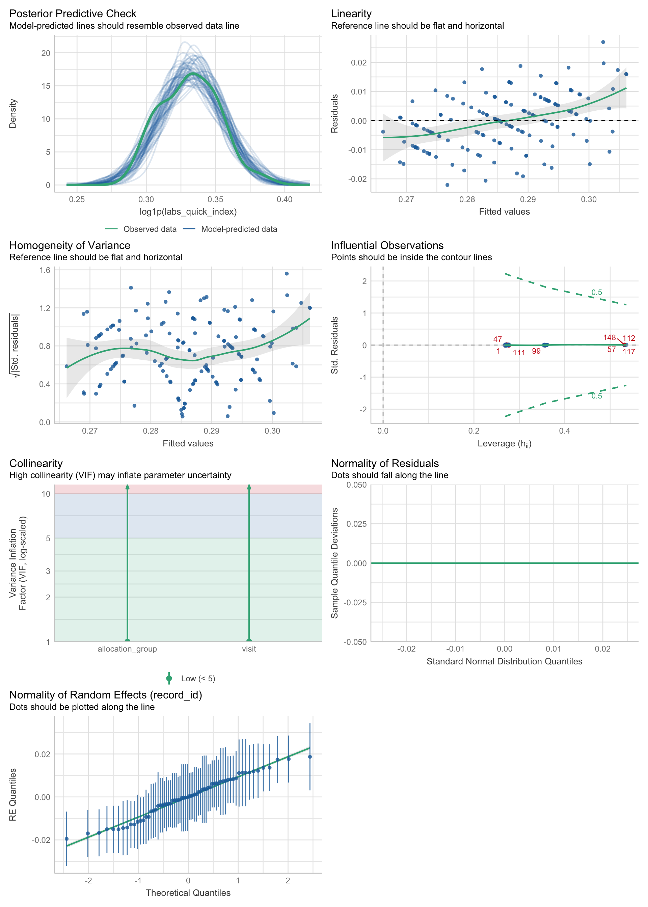
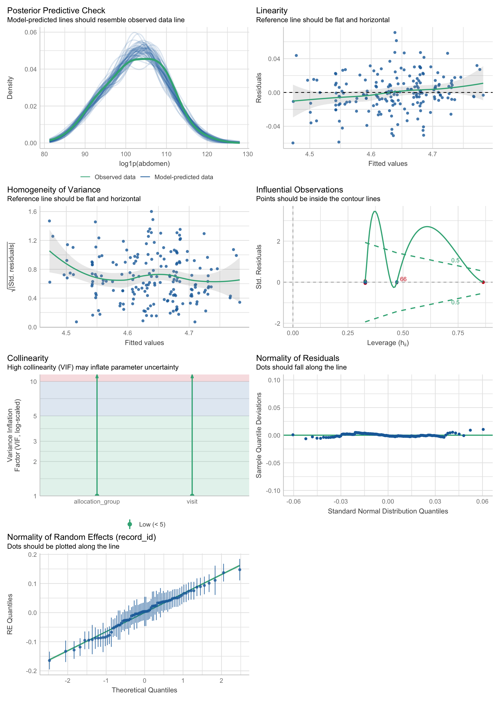
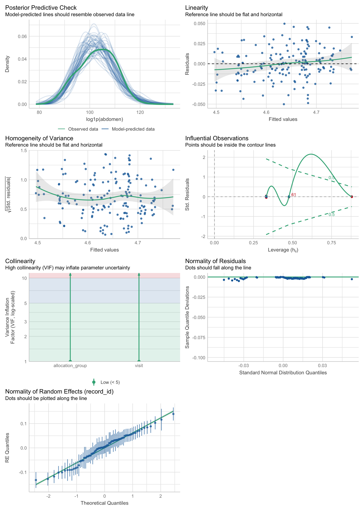
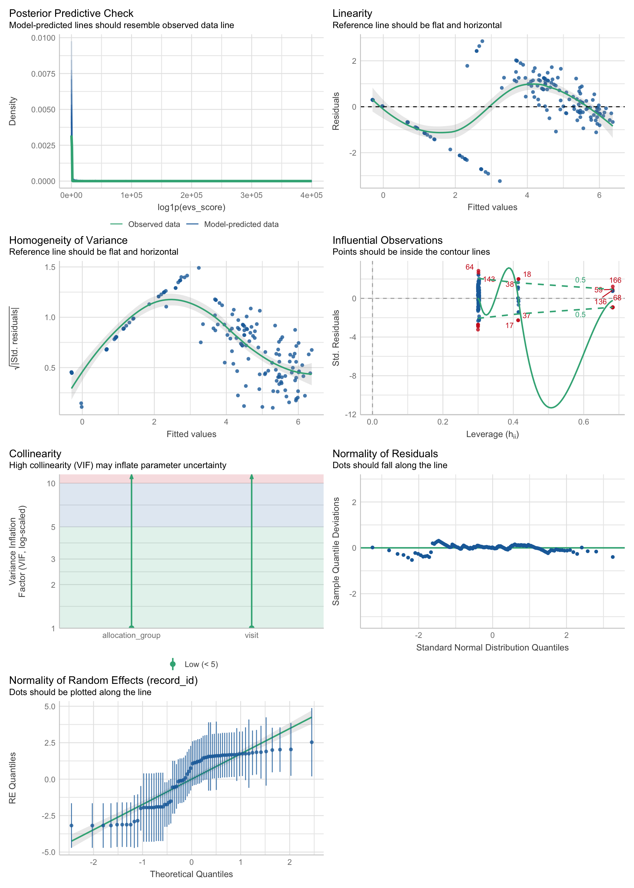

::: {.cell-output .cell-output-stdout}
[1] "factor"::: {.cell-output .cell-output-stdout}
[1] "factor"[1] "factor"[1] "factor":::
baseline <- data_model %>%
filter(visit == 1)
summ_cat <- baseline %>%
summarize_categorical(use_labels = TRUE, group_col = "allocation_group") %>%
filter(Level == 1) %>%
select(Variable, Freq, Percent, allocation_group) %>%
pivot_wider(
names_from = allocation_group,
values_from = c(Freq, Percent)
)
summ_cat <- summ_cat %>%
select(
Variable,
`Grupo Placebo (N)` = `Freq_Grupo A`,
`% (A)` = `Percent_Grupo A`,
`Grupo Eclipta (N)` = `Freq_Grupo B`,
`% (B)` = `Percent_Grupo B`)
summ_cat# A tibble: 8 × 5
Variable `Grupo Placebo (N)` `% (A)` `Grupo Eclipta (N)` `% (B)`
<chr> <int> <dbl> <int> <dbl>
1 record_id 1 2.7 0 0
2 visit 37 100 38 100
3 hypertension 6 16.2 12 31.6
4 hypercholesterolemia 25 67.6 21 55.3
5 hypertrigliceridemia 16 43.2 20 52.6
6 insulin 9 24.3 9 23.7
7 drugs_w_loss 8 21.6 11 28.9
8 drugs_w_gain 1 2.7 3 7.9baseline %>% select(!where(is.numeric), -record_id, -visit) %>% compare_groups(group_col = "allocation_group")| Hypothesis Test Results | |||
|---|---|---|---|
| Comparison of allocation_group | |||
| Variable | Test Type | Test Statistic | P-value |
| Intervenção completa? | Chi-squared test | 0.18 | 0.6715 |
| Sexo | Fisher's exact test | NA | 0.1908 |
| hypertension | Chi-squared test | 1.66 | 0.1981 |
| hypercholesterolemia | Chi-squared test | 0.73 | 0.3915 |
| hypertrigliceridemia | Chi-squared test | 0.34 | 0.5602 |
| insulin | Chi-squared test | 0.00 | 1.0000 |
| drugs_w_loss | Chi-squared test | 0.22 | 0.6428 |
| drugs_w_gain | Fisher's exact test | NA | 0.6148 |
summ_num <- baseline %>%
summarize_numerical(use_labels = TRUE, group_col = "allocation_group") %>%
select(-N) %>%
pivot_wider(
names_from = allocation_group,
values_from = `Mean (95% CI)`)
summ_num %>% print(n = Inf)# A tibble: 35 × 3
Variable `Grupo A` `Grupo B`
<chr> <list> <list>
1 Circunferência abdominal (cm) <chr [1]> <chr [1]>
2 Idade <chr [1]> <chr [1]>
3 alcohol_dose <chr [1]> <chr [1]>
4 IMC (Kg/m²) <chr [1]> <chr [1]>
5 Kcal de carboidratos <chr [1]> <chr [1]>
6 compliance_score_visit <chr [1]> <chr [1]>
7 Proteína C Reativa (mg/L) <chr [2]> <chr [2]>
8 Resultado DASS-21 Ansiedade <chr [1]> <chr [1]>
9 Resultado DASS-21 Depressão <chr [1]> <chr [1]>
10 Resultado DASS-21 Stress <chr [1]> <chr [1]>
11 duration_difference <chr [1]> <chr [1]>
12 Resultado ECAP <chr [1]> <chr [1]>
13 Escore EVS <chr [1]> <chr [1]>
14 Kcal de lipídeo <chr [1]> <chr [1]>
15 handgrip <chr [1]> <chr [1]>
16 Kcal total <chr [1]> <chr [1]>
17 Fosfatase alcalina (U/L) <chr [1]> <chr [1]>
18 ALT (U/L) <chr [1]> <chr [1]>
19 AST (U/L) <chr [1]> <chr [1]>
20 Colesterol total (mg/dL) <chr [1]> <chr [1]>
21 GGT (U/L) <chr [1]> <chr [1]>
22 Glicemia de jejum (mg/dL) <chr [1]> <chr [1]>
23 Hemoglobina A1c (%) <chr [1]> <chr [1]>
24 HDL (mg/dL) <chr [1]> <chr [1]>
25 HOMA-IR <chr [1]> <chr [1]>
26 Insulina (uIU/mL) <chr [1]> <chr [1]>
27 LDL (mg/dL) <chr [1]> <chr [1]>
28 Quick Index <chr [1]> <chr [1]>
29 Triglicerídeos (mg/dL) <chr [1]> <chr [1]>
30 Média MAP <chr [1]> <chr [1]>
31 Ângulo de fase (º) <chr [1]> <chr [1]>
32 Kcal de proteína <chr [1]> <chr [1]>
33 Reatância (Ω) <chr [1]> <chr [1]>
34 Resistência (Ω) <chr [1]> <chr [1]>
35 Qualidade de vida geral <chr [1]> <chr [1]>baseline %>% select(allocation_group, where(is.numeric), -compliance_score_visit, -duration_difference) %>%
compare_groups(group_col = "allocation_group")| Hypothesis Test Results | |||
|---|---|---|---|
| Comparison of allocation_group | |||
| Variable | Test Type | Test Statistic | P-value |
| Idade | t-test | -0.58 | 0.5641 |
| Qualidade de vida geral | t-test | -0.09 | 0.9295 |
| Resultado DASS-21 Depressão | t-test | -0.30 | 0.7617 |
| Resultado DASS-21 Ansiedade | t-test | 0.92 | 0.3585 |
| Resultado DASS-21 Stress | t-test | -0.72 | 0.4737 |
| Resultado ECAP | t-test | 1.48 | 0.1424 |
| Circunferência abdominal (cm) | t-test | 0.89 | 0.3774 |
| IMC (Kg/m²) | t-test | -0.75 | 0.4541 |
| Média MAP | t-test | -1.15 | 0.2551 |
| Resistência (Ω) | t-test | -1.37 | 0.1763 |
| Reatância (Ω) | t-test | 0.24 | 0.8077 |
| Ângulo de fase (º) | t-test | 1.56 | 0.1240 |
| handgrip | t-test | 1.70 | 0.0927 |
| Escore EVS | t-test | -0.37 | 0.7103 |
| alcohol_dose | t-test | 0.75 | 0.4551 |
| Kcal de carboidratos | t-test | 3.31 | 0.0016 |
| Kcal de proteína | t-test | 2.66 | 0.0105 |
| Kcal de lipídeo | t-test | 2.38 | 0.0210 |
| Kcal total | t-test | 3.57 | 0.0008 |
| Proteína C Reativa (mg/L) | t-test | -0.87 | 0.3852 |
| AST (U/L) | t-test | 0.60 | 0.5495 |
| ALT (U/L) | t-test | 1.43 | 0.1589 |
| GGT (U/L) | t-test | 0.37 | 0.7103 |
| Fosfatase alcalina (U/L) | t-test | -1.03 | 0.3076 |
| Colesterol total (mg/dL) | t-test | 0.10 | 0.9241 |
| LDL (mg/dL) | t-test | 0.53 | 0.5954 |
| Hemoglobina A1c (%) | t-test | 0.63 | 0.5296 |
| Triglicerídeos (mg/dL) | t-test | 0.14 | 0.8858 |
| HDL (mg/dL) | t-test | -1.15 | 0.2523 |
| Glicemia de jejum (mg/dL) | t-test | -0.06 | 0.9512 |
| Insulina (uIU/mL) | t-test | 0.81 | 0.4209 |
| HOMA-IR | t-test | 0.86 | 0.3963 |
| Quick Index | t-test | -0.17 | 0.8650 |
| Proteína C Reativa (mg/L) | t-test | -0.97 | 0.3363 |
ggplot(data = baseline, aes(x = allocation_group, y = kcal)) +
geom_violin(alpha = 0.5, trim = FALSE) +
geom_boxplot(width = 0.5, outlier.colour = "red", alpha = 0.5) +
geom_jitter(width = 0.2, alpha = 0.5) +
coord_flip() +
labs(
title = "Distribuição da ingestão energétical total por grupo de alocação",
x = "Ingestão total (Kcal)",
y = "Grupo de alocação"
) +
theme_minimal()ggplot(data = baseline, aes(x = allocation_group, y = carbs_kcal)) +
geom_violin(alpha = 0.5, trim = FALSE) +
geom_boxplot(width = 0.5, outlier.colour = "red", alpha = 0.5) +
geom_jitter(width = 0.2, alpha = 0.5) +
coord_flip() +
labs(
title = "Distribuição da ingestão de carboidratos em kcal por grupo de alocação",
x = "Ingestão total (Kcal)",
y = "Grupo de alocação"
) +
theme_minimal()
ggplot(data = baseline, aes(x = allocation_group, y = protein_kcal)) +
geom_violin(alpha = 0.5, trim = FALSE) +
geom_boxplot(width = 0.5, outlier.colour = "red", alpha = 0.5) +
geom_jitter(width = 0.2, alpha = 0.5) +
coord_flip() +
labs(
title = "Distribuição da ingestão de proteínas em kcal por grupo de alocação",
x = "Ingestão total (Kcal)",
y = "Grupo de alocação"
) +
theme_minimal()
ggplot(data = baseline, aes(x = allocation_group, y = fat_kcal)) +
geom_violin(alpha = 0.5, trim = FALSE) +
geom_boxplot(width = 0.5, outlier.colour = "red", alpha = 0.5) +
geom_jitter(width = 0.2, alpha = 0.5) +
coord_flip() +
labs(
title = "Distribuição da ingestão de gorduras em kcal por grupo de alocação",
x = "Ingestão total (Kcal)",
y = "Grupo de alocação"
) +
theme_minimal()
#contrasts(data_model$allocation_group) <- contr.treatment(2)
#contrasts(data_model$allocation_group) <- contr.sum(2) # Sum-to-zero for group
#contrasts(data_model$visit) <- contr.poly(3) # Orthogonal polynomial for visit
data_model %>% select(starts_with("lab")) %>% names() [1] "labs_ast" "labs_alt" "labs_ggt"
[4] "labs_alkp" "labs_cholesterol" "labs_ldl"
[7] "labs_hba1c" "labs_triglycerides" "labs_hdl"
[10] "labs_glucose" "labs_insulin" "labs_homa_ir"
[13] "labs_quick_index" # Plot 1: Raw data
labs_ast_hist_1 <- data_model %>%
filter(
labs_ast < 300
) %>%
ggplot(aes(x = labs_ast)) +
geom_histogram(bins = 50, fill = "skyblue", color = "black")
# Plot 2: Log-transformed data
labs_ast_hist_2 <- data_model %>%
filter(
labs_ast < 300
) %>%
ggplot(aes(x = log1p(labs_ast))) +
geom_histogram(bins = 50, fill = "lightgreen", color = "black")
# Combine side by side
labs_ast_hist_1 + labs_ast_hist_2
# library(patchwork)
# p1 + p2 # → plots side by side (horizontally)
# p1 / p2 # → plots stacked (vertically)
# (p1 | p2) / p3 # → p1 and p2 on top row, p3 belowlabs_ast_model <- lmer(log1p(labs_ast) ~ allocation_group + visit + (1 | record_id), data = data_model)
summary(labs_ast_model)Linear mixed model fit by REML. t-tests use Satterthwaite's method [
lmerModLmerTest]
Formula: log1p(labs_ast) ~ allocation_group + visit + (1 | record_id)
Data: data_model
REML criterion at convergence: -1.1
Scaled residuals:
Min 1Q Median 3Q Max
-2.70166 -0.55039 -0.06509 0.56398 2.75024
Random effects:
Groups Name Variance Std.Dev.
record_id (Intercept) 0.03018 0.1737
Residual 0.03335 0.1826
Number of obs: 179, groups: record_id, 75
Fixed effects:
Estimate Std. Error df t value Pr(>|t|)
(Intercept) 3.211106 0.038392 98.406594 83.639 <2e-16 ***
allocation_groupGrupo B -0.019464 0.049417 69.119972 -0.394 0.695
visit2 -0.015473 0.033090 110.916501 -0.468 0.641
visit3 0.002549 0.035485 113.515552 0.072 0.943
---
Signif. codes: 0 '***' 0.001 '**' 0.01 '*' 0.05 '.' 0.1 ' ' 1
Correlation of Fixed Effects:
(Intr) all_GB visit2
allctn_grGB -0.652
visit2 -0.373 0.035
visit3 -0.343 0.026 0.427performance::check_model(labs_ast_model)
labs_ast_model_check <- sensitivity_check_lmer(
model = labs_ast_model,
id_var = "record_id",
top_n = 5
)
# labs_ast_model_check$cooks_table #Cook's distance table
# labs_ast_model_check$influential_ids
labs_ast_model_check$comparison_table# A tibble: 12 × 6
Model term estimate std.error statistic p.value
<chr> <chr> <dbl> <dbl> <dbl> <dbl>
1 Original (Intercept) 3.21 0.0384 83.6 3.12e-93
2 Sensitivity (Intercept) 3.20 0.0373 85.9 1.31e-83
3 Original allocation_groupGrupo B -0.0195 0.0494 -0.394 6.95e- 1
4 Sensitivity allocation_groupGrupo B -0.0281 0.0486 -0.578 5.65e- 1
5 Original sd__(Intercept) 0.174 NA NA NA
6 Sensitivity sd__(Intercept) 0.172 NA NA NA
7 Original sd__Observation 0.183 NA NA NA
8 Sensitivity sd__Observation 0.155 NA NA NA
9 Original visit2 -0.0155 0.0331 -0.468 6.41e- 1
10 Sensitivity visit2 -0.0282 0.0293 -0.961 3.39e- 1
11 Original visit3 0.00255 0.0355 0.0718 9.43e- 1
12 Sensitivity visit3 -0.0144 0.0317 -0.454 6.51e- 1labs_ast_model_sens <- update(object = labs_ast_model,
subset = !(record_id %in% labs_ast_model_check$influential_ids)
)
check_collinearity(labs_ast_model_sens)# Check for Multicollinearity
Low Correlation
Term VIF VIF 95% CI Increased SE Tolerance Tolerance 95% CI
allocation_group 1.00 [1.00, Inf] 1.00 1.00 [0.00, 1.00]
visit 1.00 [1.00, Inf] 1.00 1.00 [0.00, 1.00]performance::check_model(labs_ast_model_sens)performance::compare_performance(labs_ast_model, labs_ast_model_sens)# Comparison of Model Performance Indices
Name | Model | AIC (weights) | AICc (weights)
-----------------------------------------------------------------------
labs_ast_model | lmerModLmerTest | 1135.8 (<.001) | 1136.3 (<.001)
labs_ast_model_sens | lmerModLmerTest | 1008.6 (>.999) | 1009.1 (>.999)
Name | BIC (weights) | R2 (cond.) | R2 (marg.) | ICC | RMSE | Sigma
--------------------------------------------------------------------------------------
labs_ast_model | 1154.9 (<.001) | 0.476 | 0.002 | 0.475 | 0.154 | 0.183
labs_ast_model_sens | 1027.3 (>.999) | 0.555 | 0.006 | 0.552 | 0.128 | 0.155ggplot(
data = data_model,
aes(
x = as.factor(visit),
y = labs_ast,
group = record_id,
)
) +
geom_line(alpha = 0.5) +
geom_point(alpha = 0.7) +
geom_smooth(
aes(group = allocation_group),
method = "lm",
se = TRUE,
linewidth = 1
) +
facet_wrap(~ allocation_group)
data_model %>%
filter(
!(record_id %in% labs_ast_model_check$influential_ids)
) %>%
ggplot(
aes(
x = as.factor(visit),
y = labs_ast,
group = record_id,
)
) +
geom_line(alpha = 0.5) +
geom_point(alpha = 0.7) +
geom_smooth(
aes(group = allocation_group),
method = "lm",
se = TRUE,
linewidth = 1
) +
facet_wrap(~ allocation_group)
Fixed effects
| Term | Estimate | Interpretation |
|---|---|---|
| (Intercept) | 24.29 | Mean AST for the grand mean (across groups and visits) |
| allocation_group1 | +0.50 | Difference of Grupo A from the grand mean. Grupo B is coded as -0.50 (sum-to-zero contrast). Not significant (p = 0.464). |
| visit.L | +0.14 | Linear trend across visits (1 → 2 → 3). Not significant (p = 0.832). |
| visit.Q | +0.40 | Quadratic trend (e.g., U-shape or inverted U-shape). Not significant (p = 0.532). |
Key Points for Orthogonal Contrasts
allocation_group1
contr.sum)visit.L and visit.Q
visit.L → Linear change across visits (Visit 1 → Visit 3). If positive, indicates AST increases linearly.visit.Q → Quadratic shape. If significant, could mean the variable rises then falls (or vice versa).None of the fixed effects are statistically significant:
→ Conclusion: No evidence of AST changing significantly across visits or differing between groups.
Random Effects
| Component | Std.Dev | Interpretation |
|---|---|---|
| (Intercept) | 4.836 | Variability in baseline AST across individuals. |
| Residual | 4.743 | Variability within individuals (visit-to-visit). |
→ Substantial variability exists between participants (Intercept SD ≈ 4.8) compared to within-participant variation (Residual SD ≈ 4.7).
Important Detail for Orthogonal Contrasts
→ If you switch back to treatment contrasts (contr.treatment), the intercept would represent Grupo B (if coded as reference), and the group coefficient would be Grupo A minus Grupo B
Fixed Effects
None of these changes are large. The magnitude and p-values remain non-significant.
| Term | Original | Sensitivity | Δ Change |
|---|---|---|---|
| (Intercept) | 3.20 | 3.18 | Slightly ↓ |
| allocation_group1 | 0.0097 | 0.014 | ↑ tiny (still NS) |
| visit.L | +0.0018 | -0.0102 | Small flip (still NS) |
| visit.Q | +0.0137 | +0.0171 | Minor ↑ |
Random Effects (Variance Components)
Residual (within-subject) variance decreased substantially after removing influential IDs. This is a signal that the influential IDs were contributing to heteroskedasticity and residual noise.
| Component | Original | Sensitivity | Δ Change |
|---|---|---|---|
| **sd__(Intercept)** | 0.174 | 0.172 | ↓ slightly |
| **sd__Observation** | 0.183 | 0.155 | ↓ noticeably |
What This Means:
library(glmmTMB)
labs_ast_glmm <- glmmTMB(
labs_ast ~ allocation_group + visit + (1 | record_id),
data = data_model,
family = Gamma(link = "log")
)
summary(labs_ast_glmm)
performance::compare_performance(labs_ast_model, labs_ast_model_sens, labs_ast_glmm)
performance::check_model(labs_ast_glmm)# Plot 1: Raw data
labs_alt_hist_1 <- data_model %>%
filter(
labs_alt < 300
) %>%
ggplot(aes(x = labs_alt)) +
geom_histogram(bins = 50, fill = "skyblue", color = "black")
# Plot 2: Log-transformed data
labs_alt_hist_2 <- data_model %>%
filter(
labs_alt < 300
) %>%
ggplot(aes(x = log1p(labs_alt))) +
geom_histogram(bins = 50, fill = "lightgreen", color = "black")
# Combine side by side
labs_alt_hist_1 + labs_alt_hist_2
# library(patchwork)
# p1 + p2 # → plots side by side (horizontally)
# p1 / p2 # → plots stacked (vertically)
# (p1 | p2) / p3 # → p1 and p2 on top row, p3 belowlabs_alt_model <- lmer(log1p(labs_alt) ~ allocation_group + visit + (1 | record_id), data = data_model)
summary(labs_alt_model)Linear mixed model fit by REML. t-tests use Satterthwaite's method [
lmerModLmerTest]
Formula: log1p(labs_alt) ~ allocation_group + visit + (1 | record_id)
Data: data_model
REML criterion at convergence: 126.8
Scaled residuals:
Min 1Q Median 3Q Max
-2.3264 -0.5369 -0.0828 0.5824 2.2125
Random effects:
Groups Name Variance Std.Dev.
record_id (Intercept) 0.10851 0.3294
Residual 0.05435 0.2331
Number of obs: 179, groups: record_id, 75
Fixed effects:
Estimate Std. Error df t value Pr(>|t|)
(Intercept) 3.322342 0.063384 86.336721 52.416 <2e-16 ***
allocation_groupGrupo B -0.066118 0.084798 70.719322 -0.780 0.438
visit2 -0.050494 0.042705 107.525266 -1.182 0.240
visit3 0.003998 0.045908 108.757785 0.087 0.931
---
Signif. codes: 0 '***' 0.001 '**' 0.01 '*' 0.05 '.' 0.1 ' ' 1
Correlation of Fixed Effects:
(Intr) all_GB visit2
allctn_grGB -0.678
visit2 -0.287 0.029
visit3 -0.264 0.021 0.435performance::check_model(labs_alt_model)
labs_alt_model_check <- sensitivity_check_lmer(
model = labs_alt_model,
id_var = "record_id",
top_n = 5
)
# labs_alt_model_check$cooks_table #Cook's distance table
# labs_alt_model_check$influential_ids
labs_alt_model_check$comparison_table# A tibble: 12 × 6
Model term estimate std.error statistic p.value
<chr> <chr> <dbl> <dbl> <dbl> <dbl>
1 Original (Intercept) 3.32 0.0634 52.4 3.08e-67
2 Sensitivity (Intercept) 3.25 0.0614 52.9 3.11e-62
3 Original allocation_groupGrupo B -0.0661 0.0848 -0.780 4.38e- 1
4 Sensitivity allocation_groupGrupo B -0.00645 0.0809 -0.0797 9.37e- 1
5 Original sd__(Intercept) 0.329 NA NA NA
6 Sensitivity sd__(Intercept) 0.306 NA NA NA
7 Original sd__Observation 0.233 NA NA NA
8 Sensitivity sd__Observation 0.204 NA NA NA
9 Original visit2 -0.0505 0.0427 -1.18 2.40e- 1
10 Sensitivity visit2 -0.0259 0.0389 -0.666 5.07e- 1
11 Original visit3 0.00400 0.0459 0.0871 9.31e- 1
12 Sensitivity visit3 -0.0137 0.0425 -0.322 7.48e- 1labs_alt_model_sens <- update(object = labs_alt_model,
subset = !(record_id %in% labs_alt_model_check$influential_ids)
)
performance::compare_performance(labs_alt_model, labs_alt_model_sens)# Comparison of Model Performance Indices
Name | Model | AIC (weights) | AICc (weights)
-----------------------------------------------------------------------
labs_alt_model | lmerModLmerTest | 1299.8 (<.001) | 1300.3 (<.001)
labs_alt_model_sens | lmerModLmerTest | 1146.9 (>.999) | 1147.4 (>.999)
Name | BIC (weights) | R2 (cond.) | R2 (marg.) | ICC | RMSE | Sigma
--------------------------------------------------------------------------------------
labs_alt_model | 1319.0 (<.001) | 0.670 | 0.010 | 0.666 | 0.188 | 0.233
labs_alt_model_sens | 1165.5 (>.999) | 0.692 | 9.800e-04 | 0.692 | 0.163 | 0.204performance::check_model(labs_alt_model_sens)
labs_alt_curve_1 <- ggplot(
data = data_model, # DATA
aes(
x = as.factor(visit),
y = labs_alt, # VARIABLE
group = record_id,
)
) +
geom_line(alpha = 0.5) +
geom_point(alpha = 0.7) +
geom_smooth(
aes(group = allocation_group),
method = "lm",
se = TRUE,
linewidth = 1
) +
facet_wrap(~ allocation_group) +
coord_cartesian(ylim = c(10, 80)) # LIMIT Y
labs_alt_curve_2 <- data_model %>% # DATA
filter( # FILTER OUT INFLUENTIAL
!(record_id %in% labs_alt_model_check$influential_ids)
) %>%
ggplot(
aes(
x = as.factor(visit),
y = labs_alt, # VARIABLE
group = record_id,
)
) +
geom_line(alpha = 0.5) +
geom_point(alpha = 0.7) +
geom_smooth(
aes(group = allocation_group),
method = "lm",
se = TRUE,
linewidth = 1
) +
facet_wrap(~ allocation_group) +
coord_cartesian(ylim = c(10, 80))
labs_alt_curve_1 + labs_alt_curve_2
# Plot 1: Raw data
p_ggt_d1 <- data_model %>%
filter(
labs_ggt < 300
) %>%
ggplot(aes(x = labs_ggt)) +
geom_histogram(bins = 50, fill = "skyblue", color = "black")
# Plot 2: Log-transformed data
p_ggt_d2 <- data_model %>%
filter(
labs_ggt < 300
) %>%
ggplot(aes(x = log1p(labs_ggt))) +
geom_histogram(bins = 50, fill = "lightgreen", color = "black")
# Combine side by side
p_ggt_d1 + p_ggt_d2
# library(patchwork)
# p1 + p2 # → plots side by side (horizontally)
# p1 / p2 # → plots stacked (vertically)
# (p1 | p2) / p3 # → p1 and p2 on top row, p3 belowlabs_ggt_model <- lmer(log1p(labs_ggt) ~ allocation_group + visit + (1 | record_id),
data = data_model)
summary(labs_ggt_model)Linear mixed model fit by REML. t-tests use Satterthwaite's method [
lmerModLmerTest]
Formula: log1p(labs_ggt) ~ allocation_group + visit + (1 | record_id)
Data: data_model
REML criterion at convergence: 208.5
Scaled residuals:
Min 1Q Median 3Q Max
-2.01053 -0.41886 -0.03652 0.43476 2.69756
Random effects:
Groups Name Variance Std.Dev.
record_id (Intercept) 0.3594 0.5995
Residual 0.0572 0.2392
Number of obs: 178, groups: record_id, 75
Fixed effects:
Estimate Std. Error df t value Pr(>|t|)
(Intercept) 3.35396 0.10425 75.82849 32.171 <2e-16 ***
allocation_groupGrupo B 0.07191 0.14388 70.46060 0.500 0.619
visit2 -0.00509 0.04429 101.49527 -0.115 0.909
visit3 0.02498 0.04809 101.87066 0.519 0.605
---
Signif. codes: 0 '***' 0.001 '**' 0.01 '*' 0.05 '.' 0.1 ' ' 1
Correlation of Fixed Effects:
(Intr) all_GB visit2
allctn_grGB -0.699
visit2 -0.178 0.019
visit3 -0.164 0.017 0.439performance::check_model(labs_ggt_model)labs_ggt_model_check <- sensitivity_check_lmer(
model = labs_ggt_model,
id_var = "record_id",
top_n = 7
)
# labs_ggt_model_check$cooks_table #Cook's distance table
# labs_ggt_model_check$influential_ids
labs_ggt_model_check$comparison_table# A tibble: 12 × 6
Model term estimate std.error statistic p.value
<chr> <chr> <dbl> <dbl> <dbl> <dbl>
1 Original (Intercept) 3.35 0.104 32.2 5.95e-46
2 Sensitivity (Intercept) 3.21 0.0866 37.1 1.05e-47
3 Original allocation_groupGrupo B 0.0719 0.144 0.500 6.19e- 1
4 Sensitivity allocation_groupGrupo B 0.137 0.118 1.16 2.50e- 1
5 Original sd__(Intercept) 0.599 NA NA NA
6 Sensitivity sd__(Intercept) 0.468 NA NA NA
7 Original sd__Observation 0.239 NA NA NA
8 Sensitivity sd__Observation 0.196 NA NA NA
9 Original visit2 -0.00509 0.0443 -0.115 9.09e- 1
10 Sensitivity visit2 0.000587 0.0383 0.0153 9.88e- 1
11 Original visit3 0.0250 0.0481 0.519 6.05e- 1
12 Sensitivity visit3 0.0494 0.0417 1.19 2.39e- 1labs_ggt_model_sens <- update(object = labs_ggt_model,
subset = !(record_id %in% labs_ggt_model_check$influential_ids)
)
performance::compare_performance(labs_ggt_model, labs_ggt_model_sens)# Comparison of Model Performance Indices
Name | Model | AIC (weights) | AICc (weights)
-----------------------------------------------------------------------
labs_ggt_model | lmerModLmerTest | 1421.4 (<.001) | 1421.9 (<.001)
labs_ggt_model_sens | lmerModLmerTest | 1178.4 (>.999) | 1178.9 (>.999)
Name | BIC (weights) | R2 (cond.) | R2 (marg.) | ICC | RMSE | Sigma
--------------------------------------------------------------------------------------
labs_ggt_model | 1440.5 (<.001) | 0.863 | 0.003 | 0.863 | 0.185 | 0.239
labs_ggt_model_sens | 1196.8 (>.999) | 0.853 | 0.020 | 0.851 | 0.151 | 0.196performance::check_model(labs_ggt_model_sens)
labs_ggt_curve_1 <- ggplot(
data = data_model, # DATA
aes(
x = as.factor(visit),
y = labs_ggt, # VARIABLE
group = record_id,
)
) +
geom_line(alpha = 0.5) +
geom_point(alpha = 0.7) +
geom_smooth(
aes(group = allocation_group),
method = "lm",
se = TRUE,
linewidth = 1
) +
facet_wrap(~ allocation_group) +
coord_cartesian(ylim = c(0, 225)) # LIMIT Y
labs_ggt_curve_2 <- data_model %>% # DATA
filter( # FILTER OUT INFLUENTIAL
!(record_id %in% labs_ggt_model_check$influential_ids)
) %>%
ggplot(
aes(
x = as.factor(visit),
y = labs_ggt, # VARIABLE
group = record_id,
)
) +
geom_line(alpha = 0.5) +
geom_point(alpha = 0.7) +
geom_smooth(
aes(group = allocation_group),
method = "lm",
se = TRUE,
linewidth = 1
) +
facet_wrap(~ allocation_group) +
coord_cartesian(ylim = c(0, 250))
labs_ggt_curve_1 + labs_ggt_curve_2ALKP is dominated by between-subject differences, and fixed effects (group, visit) explain almost nothing meaningful.
# Plot 1: Raw data
labs_alkp_hist_1 <- data_model %>%
filter(
labs_alkp < 300
) %>%
ggplot(aes(x = labs_alkp)) +
geom_histogram(bins = 50, fill = "skyblue", color = "black")
# Plot 2: Log-transformed data
labs_alkp_hist_2 <- data_model %>%
filter(
labs_alkp < 300
) %>%
ggplot(aes(x = log1p(labs_alkp))) +
geom_histogram(bins = 50, fill = "lightgreen", color = "black")
# Combine side by side
labs_alkp_hist_1 + labs_alkp_hist_2# library(patchwork)
# p1 + p2 # → plots side by side (horizontally)
# p1 / p2 # → plots stacked (vertically)
# (p1 | p2) / p3 # → p1 and p2 on top row, p3 belowlabs_alkp_model <- lmer(log1p(labs_alkp) ~ allocation_group + visit + (1 | record_id), data = data_model)
summary(labs_alkp_model)Linear mixed model fit by REML. t-tests use Satterthwaite's method [
lmerModLmerTest]
Formula: log1p(labs_alkp) ~ allocation_group + visit + (1 | record_id)
Data: data_model
REML criterion at convergence: -97.2
Scaled residuals:
Min 1Q Median 3Q Max
-2.08959 -0.43770 -0.00968 0.42902 2.62769
Random effects:
Groups Name Variance Std.Dev.
record_id (Intercept) 0.06042 0.2458
Residual 0.01004 0.1002
Number of obs: 178, groups: record_id, 75
Fixed effects:
Estimate Std. Error df t value Pr(>|t|)
(Intercept) 4.20698 0.04285 78.23006 98.188 <2e-16 ***
allocation_groupGrupo B 0.03930 0.05909 72.59474 0.665 0.508
visit2 -0.03837 0.01855 103.74604 -2.069 0.041 *
visit3 -0.02813 0.02014 104.13601 -1.396 0.166
---
Signif. codes: 0 '***' 0.001 '**' 0.01 '*' 0.05 '.' 0.1 ' ' 1
Correlation of Fixed Effects:
(Intr) all_GB visit2
allctn_grGB -0.699
visit2 -0.182 0.019
visit3 -0.167 0.017 0.439performance::check_model(labs_alkp_model)labs_alkp_model_check <- sensitivity_check_lmer(
model = labs_alkp_model,
id_var = "record_id",
top_n = 5
)
# labs_alkp_model_check$cooks_table #Cook's distance table
# labs_alkp_model_check$influential_ids
labs_alkp_model_check$comparison_table# A tibble: 12 × 6
Model term estimate std.error statistic p.value
<chr> <chr> <dbl> <dbl> <dbl> <dbl>
1 Original (Intercept) 4.21 0.0428 98.2 1.09e-83
2 Sensitivity (Intercept) 4.20 0.0407 103. 1.28e-79
3 Original allocation_groupGrupo B 0.0393 0.0591 0.665 5.08e- 1
4 Sensitivity allocation_groupGrupo B 0.0141 0.0567 0.250 8.04e- 1
5 Original sd__(Intercept) 0.246 NA NA NA
6 Sensitivity sd__(Intercept) 0.229 NA NA NA
7 Original sd__Observation 0.100 NA NA NA
8 Sensitivity sd__Observation 0.0867 NA NA NA
9 Original visit2 -0.0384 0.0185 -2.07 4.10e- 2
10 Sensitivity visit2 -0.0258 0.0168 -1.54 1.28e- 1
11 Original visit3 -0.0281 0.0201 -1.40 1.66e- 1
12 Sensitivity visit3 -0.0264 0.0184 -1.43 1.55e- 1labs_alkp_model_sens <- update(object = labs_alkp_model,
subset = !(record_id %in% labs_alkp_model_check$influential_ids)
)
performance::compare_performance(labs_alkp_model, labs_alkp_model_sens)# Comparison of Model Performance Indices
Name | Model | AIC (weights) | AICc (weights)
------------------------------------------------------------------------
labs_alkp_model | lmerModLmerTest | 1391.1 (<.001) | 1391.6 (<.001)
labs_alkp_model_sens | lmerModLmerTest | 1234.3 (>.999) | 1234.9 (>.999)
Name | BIC (weights) | R2 (cond.) | R2 (marg.) | ICC | RMSE | Sigma
---------------------------------------------------------------------------------------
labs_alkp_model | 1410.2 (<.001) | 0.859 | 0.010 | 0.858 | 0.078 | 0.100
labs_alkp_model_sens | 1252.9 (>.999) | 0.875 | 0.004 | 0.874 | 0.066 | 0.087performance::check_model(labs_alkp_model_sens)
labs_cholesterol_model <- lmer(log1p(labs_cholesterol) ~ allocation_group + visit + (1 | record_id), data = data_model)
summary(labs_cholesterol_model)Linear mixed model fit by REML. t-tests use Satterthwaite's method [
lmerModLmerTest]
Formula: log1p(labs_cholesterol) ~ allocation_group + visit + (1 | record_id)
Data: data_model
REML criterion at convergence: -191.9
Scaled residuals:
Min 1Q Median 3Q Max
-3.3304 -0.3972 0.0585 0.4380 2.5959
Random effects:
Groups Name Variance Std.Dev.
record_id (Intercept) 0.022347 0.14949
Residual 0.007736 0.08795
Number of obs: 179, groups: record_id, 75
Fixed effects:
Estimate Std. Error df t value Pr(>|t|)
(Intercept) 5.24932 0.02755 85.23418 190.538 <2e-16 ***
allocation_groupGrupo B -0.01237 0.03734 73.90788 -0.331 0.7414
visit2 -0.03328 0.01618 108.75770 -2.057 0.0421 *
visit3 -0.02042 0.01741 109.57909 -1.173 0.2433
---
Signif. codes: 0 '***' 0.001 '**' 0.01 '*' 0.05 '.' 0.1 ' ' 1
Correlation of Fixed Effects:
(Intr) all_GB visit2
allctn_grGB -0.687
visit2 -0.249 0.025
visit3 -0.228 0.019 0.438performance::check_model(labs_cholesterol_model)labs_cholesterol_model_check <- sensitivity_check_lmer(
model = labs_cholesterol_model,
id_var = "record_id",
top_n = 5
)
# labs_cholesterol_model_check$cooks_table #Cook's distance table
# labs_cholesterol_model_check$influential_ids
labs_cholesterol_model_check$comparison_table# A tibble: 12 × 6
Model term estimate std.error statistic p.value
<chr> <chr> <dbl> <dbl> <dbl> <dbl>
1 Original (Intercept) 5.25 0.0275 191. 6.87e-114
2 Sensitivity (Intercept) 5.26 0.0256 205. 1.45e-104
3 Original allocation_groupGrupo B -0.0124 0.0373 -0.331 7.41e- 1
4 Sensitivity allocation_groupGrupo B -0.00573 0.0354 -0.162 8.72e- 1
5 Original sd__(Intercept) 0.149 NA NA NA
6 Sensitivity sd__(Intercept) 0.141 NA NA NA
7 Original sd__Observation 0.0880 NA NA NA
8 Sensitivity sd__Observation 0.0641 NA NA NA
9 Original visit2 -0.0333 0.0162 -2.06 4.21e- 2
10 Sensitivity visit2 -0.0298 0.0124 -2.40 1.82e- 2
11 Original visit3 -0.0204 0.0174 -1.17 2.43e- 1
12 Sensitivity visit3 -0.0148 0.0133 -1.11 2.69e- 1labs_cholesterol_model_sens <- update(object = labs_cholesterol_model,
subset = !(record_id %in% labs_cholesterol_model_check$influential_ids)
)
performance::compare_performance(labs_cholesterol_model, labs_cholesterol_model_sens)# Comparison of Model Performance Indices
Name | Model | AIC (weights) | AICc (weights)
-------------------------------------------------------------------------------
labs_cholesterol_model | lmerModLmerTest | 1670.4 (<.001) | 1670.9 (<.001)
labs_cholesterol_model_sens | lmerModLmerTest | 1473.9 (>.999) | 1474.4 (>.999)
Name | BIC (weights) | R2 (cond.) | R2 (marg.) | ICC
------------------------------------------------------------------------------
labs_cholesterol_model | 1689.5 (<.001) | 0.745 | 0.008 | 0.743
labs_cholesterol_model_sens | 1492.5 (>.999) | 0.830 | 0.007 | 0.828
Name | RMSE | Sigma
-------------------------------------------
labs_cholesterol_model | 0.070 | 0.088
labs_cholesterol_model_sens | 0.050 | 0.064performance::check_model(labs_cholesterol_model_sens)
labs_ldl_model <- lmer(log1p(labs_ldl) ~ allocation_group + visit + (1 | record_id), data = data_model)
summary(labs_ldl_model)Linear mixed model fit by REML. t-tests use Satterthwaite's method [
lmerModLmerTest]
Formula: log1p(labs_ldl) ~ allocation_group + visit + (1 | record_id)
Data: data_model
REML criterion at convergence: 7.8
Scaled residuals:
Min 1Q Median 3Q Max
-4.1706 -0.2795 0.0407 0.3843 2.2278
Random effects:
Groups Name Variance Std.Dev.
record_id (Intercept) 0.05830 0.2414
Residual 0.02671 0.1634
Number of obs: 179, groups: record_id, 75
Fixed effects:
Estimate Std. Error df t value Pr(>|t|)
(Intercept) 4.72505 0.04593 85.65500 102.884 <2e-16 ***
allocation_groupGrupo B -0.04269 0.06165 71.19056 -0.692 0.491
visit2 -0.04811 0.02997 107.50310 -1.605 0.111
visit3 -0.01649 0.03222 108.62445 -0.512 0.610
---
Signif. codes: 0 '***' 0.001 '**' 0.01 '*' 0.05 '.' 0.1 ' ' 1
Correlation of Fixed Effects:
(Intr) all_GB visit2
allctn_grGB -0.680
visit2 -0.278 0.028
visit3 -0.255 0.021 0.436performance::check_model(labs_ldl_model)
labs_ldl_model_check <- sensitivity_check_lmer(
model = labs_ldl_model,
id_var = "record_id",
top_n = 5
)
# labs_ldl_model_check$cooks_table #Cook's distance table
# labs_ldl_model_check$influential_ids
labs_ldl_model_check$comparison_table# A tibble: 12 × 6
Model term estimate std.error statistic p.value
<chr> <chr> <dbl> <dbl> <dbl> <dbl>
1 Original (Intercept) 4.73 0.0459 103. 1.56e-91
2 Sensitivity (Intercept) 4.74 0.0421 112. 1.41e-83
3 Original allocation_groupGrupo B -0.0427 0.0617 -0.692 4.91e- 1
4 Sensitivity allocation_groupGrupo B -0.0278 0.0581 -0.478 6.34e- 1
5 Original sd__(Intercept) 0.241 NA NA NA
6 Sensitivity sd__(Intercept) 0.230 NA NA NA
7 Original sd__Observation 0.163 NA NA NA
8 Sensitivity sd__Observation 0.110 NA NA NA
9 Original visit2 -0.0481 0.0300 -1.61 1.11e- 1
10 Sensitivity visit2 -0.0331 0.0213 -1.55 1.23e- 1
11 Original visit3 -0.0165 0.0322 -0.512 6.10e- 1
12 Sensitivity visit3 -0.0133 0.0229 -0.579 5.64e- 1labs_ldl_model_sens <- update(object = labs_ldl_model,
subset = !(record_id %in% labs_ldl_model_check$influential_ids)
)
performance::compare_performance(labs_cholesterol_model, labs_cholesterol_model_sens)# Comparison of Model Performance Indices
Name | Model | AIC (weights) | AICc (weights)
-------------------------------------------------------------------------------
labs_cholesterol_model | lmerModLmerTest | 1670.4 (<.001) | 1670.9 (<.001)
labs_cholesterol_model_sens | lmerModLmerTest | 1473.9 (>.999) | 1474.4 (>.999)
Name | BIC (weights) | R2 (cond.) | R2 (marg.) | ICC
------------------------------------------------------------------------------
labs_cholesterol_model | 1689.5 (<.001) | 0.745 | 0.008 | 0.743
labs_cholesterol_model_sens | 1492.5 (>.999) | 0.830 | 0.007 | 0.828
Name | RMSE | Sigma
-------------------------------------------
labs_cholesterol_model | 0.070 | 0.088
labs_cholesterol_model_sens | 0.050 | 0.064performance::check_model(labs_ldl_model_sens)
labs_hdl_model <- lmer(log1p(labs_hdl) ~ allocation_group + visit + (1 | record_id), data = data_model)
summary(labs_hdl_model)Linear mixed model fit by REML. t-tests use Satterthwaite's method [
lmerModLmerTest]
Formula: log1p(labs_hdl) ~ allocation_group + visit + (1 | record_id)
Data: data_model
REML criterion at convergence: -88.2
Scaled residuals:
Min 1Q Median 3Q Max
-2.42183 -0.46078 -0.03138 0.40279 2.99067
Random effects:
Groups Name Variance Std.Dev.
record_id (Intercept) 0.03969 0.1992
Residual 0.01414 0.1189
Number of obs: 179, groups: record_id, 75
Fixed effects:
Estimate Std. Error df t value Pr(>|t|)
(Intercept) 3.95161 0.03682 82.53850 107.316 <2e-16 ***
allocation_groupGrupo B 0.05158 0.04986 70.99954 1.034 0.304
visit2 -0.02764 0.02187 106.04810 -1.264 0.209
visit3 -0.03432 0.02352 106.90851 -1.459 0.147
---
Signif. codes: 0 '***' 0.001 '**' 0.01 '*' 0.05 '.' 0.1 ' ' 1
Correlation of Fixed Effects:
(Intr) all_GB visit2
allctn_grGB -0.686
visit2 -0.252 0.026
visit3 -0.231 0.019 0.438performance::check_model(labs_hdl_model)
labs_hdl_model_check <- sensitivity_check_lmer(
model = labs_hdl_model,
id_var = "record_id",
top_n = 5
)
# labs_hdl_model_check$cooks_table #Cook's distance table
# labs_hdl_model_check$influential_ids
labs_hdl_model_check$comparison_table# A tibble: 12 × 6
Model term estimate std.error statistic p.value
<chr> <chr> <dbl> <dbl> <dbl> <dbl>
1 Original (Intercept) 3.95 0.0368 107. 2.03e-90
2 Sensitivity (Intercept) 3.94 0.0345 114. 1.15e-87
3 Original allocation_groupGrupo B 0.0516 0.0499 1.03 3.04e- 1
4 Sensitivity allocation_groupGrupo B 0.0330 0.0473 0.698 4.88e- 1
5 Original sd__(Intercept) 0.199 NA NA NA
6 Sensitivity sd__(Intercept) 0.184 NA NA NA
7 Original sd__Observation 0.119 NA NA NA
8 Sensitivity sd__Observation 0.102 NA NA NA
9 Original visit2 -0.0276 0.0219 -1.26 2.09e- 1
10 Sensitivity visit2 -0.0253 0.0194 -1.31 1.94e- 1
11 Original visit3 -0.0343 0.0235 -1.46 1.47e- 1
12 Sensitivity visit3 -0.0237 0.0209 -1.14 2.59e- 1labs_hdl_model_sens <- update(object = labs_hdl_model,
subset = !(record_id %in% labs_hdl_model_check$influential_ids)
)
performance::compare_performance(labs_cholesterol_model, labs_cholesterol_model_sens)# Comparison of Model Performance Indices
Name | Model | AIC (weights) | AICc (weights)
-------------------------------------------------------------------------------
labs_cholesterol_model | lmerModLmerTest | 1670.4 (<.001) | 1670.9 (<.001)
labs_cholesterol_model_sens | lmerModLmerTest | 1473.9 (>.999) | 1474.4 (>.999)
Name | BIC (weights) | R2 (cond.) | R2 (marg.) | ICC
------------------------------------------------------------------------------
labs_cholesterol_model | 1689.5 (<.001) | 0.745 | 0.008 | 0.743
labs_cholesterol_model_sens | 1492.5 (>.999) | 0.830 | 0.007 | 0.828
Name | RMSE | Sigma
-------------------------------------------
labs_cholesterol_model | 0.070 | 0.088
labs_cholesterol_model_sens | 0.050 | 0.064performance::check_model(labs_hdl_model_sens)
labs_triglycerides_model <- lmer(log1p(labs_triglycerides) ~ allocation_group + visit + (1 | record_id), data = data_model)
summary(labs_triglycerides_model)Linear mixed model fit by REML. t-tests use Satterthwaite's method [
lmerModLmerTest]
Formula: log1p(labs_triglycerides) ~ allocation_group + visit + (1 | record_id)
Data: data_model
REML criterion at convergence: 151.6
Scaled residuals:
Min 1Q Median 3Q Max
-2.50086 -0.59514 -0.07471 0.52424 2.79104
Random effects:
Groups Name Variance Std.Dev.
record_id (Intercept) 0.12886 0.3590
Residual 0.06166 0.2483
Number of obs: 179, groups: record_id, 75
Fixed effects:
Estimate Std. Error df t value Pr(>|t|)
(Intercept) 4.76847 0.06866 85.36722 69.452 <2e-16 ***
allocation_groupGrupo B -0.02636 0.09202 70.37291 -0.286 0.775
visit2 0.03097 0.04551 106.93179 0.681 0.498
visit3 0.03105 0.04893 108.10994 0.635 0.527
---
Signif. codes: 0 '***' 0.001 '**' 0.01 '*' 0.05 '.' 0.1 ' ' 1
Correlation of Fixed Effects:
(Intr) all_GB visit2
allctn_grGB -0.679
visit2 -0.282 0.028
visit3 -0.259 0.021 0.435performance::check_model(labs_triglycerides_model)
labs_triglycerides_model_check <- sensitivity_check_lmer(
model = labs_triglycerides_model,
id_var = "record_id",
top_n = 5
)
# labs_triglycerides_model_check$cooks_table #Cook's distance table
# labs_triglycerides_model_check$influential_ids
labs_triglycerides_model_check$comparison_table# A tibble: 12 × 6
Model term estimate std.error statistic p.value
<chr> <chr> <dbl> <dbl> <dbl> <dbl>
1 Original (Intercept) 4.77 0.0687 69.5 6.74e-77
2 Sensitivity (Intercept) 4.72 0.0668 70.6 9.23e-72
3 Original allocation_groupGrupo B -0.0264 0.0920 -0.286 7.75e- 1
4 Sensitivity allocation_groupGrupo B 0.0358 0.0893 0.401 6.90e- 1
5 Original sd__(Intercept) 0.359 NA NA NA
6 Sensitivity sd__(Intercept) 0.339 NA NA NA
7 Original sd__Observation 0.248 NA NA NA
8 Sensitivity sd__Observation 0.222 NA NA NA
9 Original visit2 0.0310 0.0455 0.681 4.98e- 1
10 Sensitivity visit2 0.0372 0.0423 0.879 3.81e- 1
11 Original visit3 0.0310 0.0489 0.635 5.27e- 1
12 Sensitivity visit3 0.00971 0.0462 0.210 8.34e- 1labs_triglycerides_model_sens <- update(object = labs_triglycerides_model,
subset = !(record_id %in% labs_triglycerides_model_check$influential_ids)
)
performance::compare_performance(labs_cholesterol_model, labs_cholesterol_model_sens)# Comparison of Model Performance Indices
Name | Model | AIC (weights) | AICc (weights)
-------------------------------------------------------------------------------
labs_cholesterol_model | lmerModLmerTest | 1670.4 (<.001) | 1670.9 (<.001)
labs_cholesterol_model_sens | lmerModLmerTest | 1473.9 (>.999) | 1474.4 (>.999)
Name | BIC (weights) | R2 (cond.) | R2 (marg.) | ICC
------------------------------------------------------------------------------
labs_cholesterol_model | 1689.5 (<.001) | 0.745 | 0.008 | 0.743
labs_cholesterol_model_sens | 1492.5 (>.999) | 0.830 | 0.007 | 0.828
Name | RMSE | Sigma
-------------------------------------------
labs_cholesterol_model | 0.070 | 0.088
labs_cholesterol_model_sens | 0.050 | 0.064performance::check_model(labs_triglycerides_model_sens)
labs_glucose_model <- lmer(log1p(labs_glucose) ~ allocation_group + visit + (1 | record_id), data = data_model)
summary(labs_glucose_model)Linear mixed model fit by REML. t-tests use Satterthwaite's method [
lmerModLmerTest]
Formula: log1p(labs_glucose) ~ allocation_group + visit + (1 | record_id)
Data: data_model
REML criterion at convergence: -162.6
Scaled residuals:
Min 1Q Median 3Q Max
-2.0407 -0.5291 -0.1197 0.5044 3.5110
Random effects:
Groups Name Variance Std.Dev.
record_id (Intercept) 0.03044 0.1745
Residual 0.00819 0.0905
Number of obs: 176, groups: record_id, 74
Fixed effects:
Estimate Std. Error df t value Pr(>|t|)
(Intercept) 4.449e+00 3.144e-02 8.364e+01 141.539 <2e-16 ***
allocation_groupGrupo B -4.256e-03 4.318e-02 7.464e+01 -0.099 0.922
visit2 1.715e-04 1.684e-02 1.072e+02 0.010 0.992
visit3 3.212e-02 1.812e-02 1.084e+02 1.773 0.079 .
---
Signif. codes: 0 '***' 0.001 '**' 0.01 '*' 0.05 '.' 0.1 ' ' 1
Correlation of Fixed Effects:
(Intr) all_GB visit2
allctn_grGB -0.685
visit2 -0.222 0.015
visit3 -0.208 0.010 0.440performance::check_model(labs_glucose_model)
labs_glucose_model_check <- sensitivity_check_lmer(
model = labs_glucose_model,
id_var = "record_id",
top_n = 5
)
# labs_glucose_model_check$cooks_table #Cook's distance table
# labs_glucose_model_check$influential_ids
labs_glucose_model_check$comparison_table# A tibble: 12 × 6
Model term estimate std.error statistic p.value
<chr> <chr> <dbl> <dbl> <dbl> <dbl>
1 Original (Intercept) 4.45 0.0314 142. 2.31e-101
2 Sensitivity (Intercept) 4.42 0.0219 202. 8.03e-113
3 Original allocation_groupGrupo B -0.00426 0.0432 -0.0986 9.22e- 1
4 Sensitivity allocation_groupGrupo B 0.00111 0.0294 0.0380 9.70e- 1
5 Original sd__(Intercept) 0.174 NA NA NA
6 Sensitivity sd__(Intercept) 0.110 NA NA NA
7 Original sd__Observation 0.0905 NA NA NA
8 Sensitivity sd__Observation 0.0756 NA NA NA
9 Original visit2 0.000171 0.0168 0.0102 9.92e- 1
10 Sensitivity visit2 -0.00297 0.0146 -0.203 8.40e- 1
11 Original visit3 0.0321 0.0181 1.77 7.90e- 2
12 Sensitivity visit3 0.0235 0.0158 1.49 1.40e- 1labs_glucose_model_sens <- update(object = labs_glucose_model,
subset = !(record_id %in% labs_glucose_model_check$influential_ids)
)
performance::compare_performance(labs_cholesterol_model, labs_cholesterol_model_sens)# Comparison of Model Performance Indices
Name | Model | AIC (weights) | AICc (weights)
-------------------------------------------------------------------------------
labs_cholesterol_model | lmerModLmerTest | 1670.4 (<.001) | 1670.9 (<.001)
labs_cholesterol_model_sens | lmerModLmerTest | 1473.9 (>.999) | 1474.4 (>.999)
Name | BIC (weights) | R2 (cond.) | R2 (marg.) | ICC
------------------------------------------------------------------------------
labs_cholesterol_model | 1689.5 (<.001) | 0.745 | 0.008 | 0.743
labs_cholesterol_model_sens | 1492.5 (>.999) | 0.830 | 0.007 | 0.828
Name | RMSE | Sigma
-------------------------------------------
labs_cholesterol_model | 0.070 | 0.088
labs_cholesterol_model_sens | 0.050 | 0.064performance::check_model(labs_glucose_model_sens)
labs_hba1c_model <- lmer(log1p(labs_hba1c) ~ allocation_group + visit + (1 | record_id), data = data_model)
summary(labs_hba1c_model)Linear mixed model fit by REML. t-tests use Satterthwaite's method [
lmerModLmerTest]
Formula: log1p(labs_hba1c) ~ allocation_group + visit + (1 | record_id)
Data: data_model
REML criterion at convergence: -424.6
Scaled residuals:
Min 1Q Median 3Q Max
-3.4350 -0.4087 -0.0665 0.3960 3.4232
Random effects:
Groups Name Variance Std.Dev.
record_id (Intercept) 0.011010 0.10493
Residual 0.001277 0.03573
Number of obs: 176, groups: record_id, 75
Fixed effects:
Estimate Std. Error df t value Pr(>|t|)
(Intercept) 1.869611 0.017985 77.852617 103.955 <2e-16 ***
allocation_groupGrupo B -0.021458 0.024937 73.887475 -0.861 0.3923
visit2 -0.001844 0.006719 102.194700 -0.274 0.7843
visit3 0.012455 0.007202 102.413868 1.729 0.0867 .
---
Signif. codes: 0 '***' 0.001 '**' 0.01 '*' 0.05 '.' 0.1 ' ' 1
Correlation of Fixed Effects:
(Intr) all_GB visit2
allctn_grGB -0.703
visit2 -0.150 0.013
visit3 -0.139 0.011 0.431performance::check_model(labs_hba1c_model)
labs_hba1c_model_check <- sensitivity_check_lmer(
model = labs_hba1c_model,
id_var = "record_id",
top_n = 5
)
# labs_hba1c_model_check$cooks_table #Cook's distance table
# labs_hba1c_model_check$influential_ids
labs_hba1c_model_check$comparison_table# A tibble: 12 × 6
Model term estimate std.error statistic p.value
<chr> <chr> <dbl> <dbl> <dbl> <dbl>
1 Original (Intercept) 1.87 0.0180 104. 2.75e-85
2 Sensitivity (Intercept) 1.85 0.0133 140. 1.28e-89
3 Original allocation_groupGrupo B -0.0215 0.0249 -0.861 3.92e- 1
4 Sensitivity allocation_groupGrupo B -0.0174 0.0185 -0.940 3.50e- 1
5 Original sd__(Intercept) 0.105 NA NA NA
6 Sensitivity sd__(Intercept) 0.0751 NA NA NA
7 Original sd__Observation 0.0357 NA NA NA
8 Sensitivity sd__Observation 0.0261 NA NA NA
9 Original visit2 -0.00184 0.00672 -0.274 7.84e- 1
10 Sensitivity visit2 -0.00381 0.00510 -0.747 4.57e- 1
11 Original visit3 0.0125 0.00720 1.73 8.67e- 2
12 Sensitivity visit3 0.00930 0.00556 1.67 9.76e- 2labs_hba1c_model_sens <- update(object = labs_hba1c_model,
subset = !(record_id %in% labs_hba1c_model_check$influential_ids)
)
performance::compare_performance(labs_cholesterol_model, labs_cholesterol_model_sens)# Comparison of Model Performance Indices
Name | Model | AIC (weights) | AICc (weights)
-------------------------------------------------------------------------------
labs_cholesterol_model | lmerModLmerTest | 1670.4 (<.001) | 1670.9 (<.001)
labs_cholesterol_model_sens | lmerModLmerTest | 1473.9 (>.999) | 1474.4 (>.999)
Name | BIC (weights) | R2 (cond.) | R2 (marg.) | ICC
------------------------------------------------------------------------------
labs_cholesterol_model | 1689.5 (<.001) | 0.745 | 0.008 | 0.743
labs_cholesterol_model_sens | 1492.5 (>.999) | 0.830 | 0.007 | 0.828
Name | RMSE | Sigma
-------------------------------------------
labs_cholesterol_model | 0.070 | 0.088
labs_cholesterol_model_sens | 0.050 | 0.064performance::check_model(labs_hba1c_model_sens)
labs_insulin_model <- lmer(log1p(labs_insulin) ~ allocation_group + visit + (1 | record_id), data = data_model)
summary(labs_insulin_model)Linear mixed model fit by REML. t-tests use Satterthwaite's method [
lmerModLmerTest]
Formula: log1p(labs_insulin) ~ allocation_group + visit + (1 | record_id)
Data: data_model
REML criterion at convergence: 182.8
Scaled residuals:
Min 1Q Median 3Q Max
-2.06431 -0.55691 -0.04751 0.43913 2.63050
Random effects:
Groups Name Variance Std.Dev.
record_id (Intercept) 0.14678 0.3831
Residual 0.08048 0.2837
Number of obs: 169, groups: record_id, 74
Fixed effects:
Estimate Std. Error df t value Pr(>|t|)
(Intercept) 2.626546 0.074810 91.434405 35.109 <2e-16 ***
allocation_groupGrupo B 0.007686 0.100508 75.214188 0.076 0.9392
visit2 -0.123367 0.052989 103.820740 -2.328 0.0218 *
visit3 -0.003588 0.058927 105.428613 -0.061 0.9516
---
Signif. codes: 0 '***' 0.001 '**' 0.01 '*' 0.05 '.' 0.1 ' ' 1
Correlation of Fixed Effects:
(Intr) all_GB visit2
allctn_grGB -0.672
visit2 -0.284 0.014
visit3 -0.266 0.029 0.396performance::check_model(labs_insulin_model)labs_insulin_model_check <- sensitivity_check_lmer(
model = labs_insulin_model,
id_var = "record_id",
top_n = 5
)
# labs_insulin_model_check$cooks_table #Cook's distance table
# labs_insulin_model_check$influential_ids
labs_insulin_model_check$comparison_table# A tibble: 12 × 6
Model term estimate std.error statistic p.value
<chr> <chr> <dbl> <dbl> <dbl> <dbl>
1 Original (Intercept) 2.63 0.0748 35.1 7.35e-55
2 Sensitivity (Intercept) 2.60 0.0575 45.2 6.34e-64
3 Original allocation_groupGrupo B 0.00769 0.101 0.0765 9.39e- 1
4 Sensitivity allocation_groupGrupo B 0.0101 0.0758 0.133 8.94e- 1
5 Original sd__(Intercept) 0.383 NA NA NA
6 Sensitivity sd__(Intercept) 0.258 NA NA NA
7 Original sd__Observation 0.284 NA NA NA
8 Sensitivity sd__Observation 0.256 NA NA NA
9 Original visit2 -0.123 0.0530 -2.33 2.18e- 2
10 Sensitivity visit2 -0.122 0.0496 -2.46 1.56e- 2
11 Original visit3 -0.00359 0.0589 -0.0609 9.52e- 1
12 Sensitivity visit3 -0.0412 0.0552 -0.747 4.57e- 1labs_insulin_model_sens <- update(object = labs_insulin_model,
subset = !(record_id %in% labs_insulin_model_check$influential_ids)
)
performance::compare_performance(labs_cholesterol_model, labs_cholesterol_model_sens)# Comparison of Model Performance Indices
Name | Model | AIC (weights) | AICc (weights)
-------------------------------------------------------------------------------
labs_cholesterol_model | lmerModLmerTest | 1670.4 (<.001) | 1670.9 (<.001)
labs_cholesterol_model_sens | lmerModLmerTest | 1473.9 (>.999) | 1474.4 (>.999)
Name | BIC (weights) | R2 (cond.) | R2 (marg.) | ICC
------------------------------------------------------------------------------
labs_cholesterol_model | 1689.5 (<.001) | 0.745 | 0.008 | 0.743
labs_cholesterol_model_sens | 1492.5 (>.999) | 0.830 | 0.007 | 0.828
Name | RMSE | Sigma
-------------------------------------------
labs_cholesterol_model | 0.070 | 0.088
labs_cholesterol_model_sens | 0.050 | 0.064performance::check_model(labs_insulin_model_sens)
labs_homa_ir_model <- lmer(log1p(labs_homa_ir) ~ allocation_group + visit + (1 | record_id), data = data_model)
summary(labs_homa_ir_model)Linear mixed model fit by REML. t-tests use Satterthwaite's method [
lmerModLmerTest]
Formula: log1p(labs_homa_ir) ~ allocation_group + visit + (1 | record_id)
Data: data_model
REML criterion at convergence: 139.4
Scaled residuals:
Min 1Q Median 3Q Max
-2.3147 -0.5368 -0.1023 0.3989 3.4001
Random effects:
Groups Name Variance Std.Dev.
record_id (Intercept) 0.10972 0.3312
Residual 0.06374 0.2525
Number of obs: 167, groups: record_id, 73
Fixed effects:
Estimate Std. Error df t value Pr(>|t|)
(Intercept) 1.32200 0.06528 90.98197 20.251 <2e-16 ***
allocation_groupGrupo B -0.01037 0.08803 73.93000 -0.118 0.9066
visit2 -0.08504 0.04725 102.46135 -1.800 0.0748 .
visit3 0.03543 0.05281 105.43262 0.671 0.5037
---
Signif. codes: 0 '***' 0.001 '**' 0.01 '*' 0.05 '.' 0.1 ' ' 1
Correlation of Fixed Effects:
(Intr) all_GB visit2
allctn_grGB -0.662
visit2 -0.291 0.006
visit3 -0.274 0.019 0.401performance::check_model(labs_homa_ir_model)labs_homa_ir_model_check <- sensitivity_check_lmer(
model = labs_homa_ir_model,
id_var = "record_id",
top_n = 5
)
# labs_homa_ir_model_check$cooks_table #Cook's distance table
# labs_homa_ir_model_check$influential_ids
labs_homa_ir_model_check$comparison_table# A tibble: 12 × 6
Model term estimate std.error statistic p.value
<chr> <chr> <dbl> <dbl> <dbl> <dbl>
1 Original (Intercept) 1.32 0.0653 20.3 1.81e-35
2 Sensitivity (Intercept) 1.29 0.0518 25.0 2.25e-41
3 Original allocation_groupGrupo B -0.0104 0.0880 -0.118 9.07e- 1
4 Sensitivity allocation_groupGrupo B -0.00883 0.0683 -0.129 8.98e- 1
5 Original sd__(Intercept) 0.331 NA NA NA
6 Sensitivity sd__(Intercept) 0.237 NA NA NA
7 Original sd__Observation 0.252 NA NA NA
8 Sensitivity sd__Observation 0.216 NA NA NA
9 Original visit2 -0.0850 0.0473 -1.80 7.48e- 2
10 Sensitivity visit2 -0.0789 0.0422 -1.87 6.46e- 2
11 Original visit3 0.0354 0.0528 0.671 5.04e- 1
12 Sensitivity visit3 0.00728 0.0472 0.154 8.78e- 1labs_homa_ir_model_sens <- update(object = labs_homa_ir_model,
subset = !(record_id %in% labs_homa_ir_model_check$influential_ids)
)
performance::compare_performance(labs_cholesterol_model, labs_cholesterol_model_sens)# Comparison of Model Performance Indices
Name | Model | AIC (weights) | AICc (weights)
-------------------------------------------------------------------------------
labs_cholesterol_model | lmerModLmerTest | 1670.4 (<.001) | 1670.9 (<.001)
labs_cholesterol_model_sens | lmerModLmerTest | 1473.9 (>.999) | 1474.4 (>.999)
Name | BIC (weights) | R2 (cond.) | R2 (marg.) | ICC
------------------------------------------------------------------------------
labs_cholesterol_model | 1689.5 (<.001) | 0.745 | 0.008 | 0.743
labs_cholesterol_model_sens | 1492.5 (>.999) | 0.830 | 0.007 | 0.828
Name | RMSE | Sigma
-------------------------------------------
labs_cholesterol_model | 0.070 | 0.088
labs_cholesterol_model_sens | 0.050 | 0.064performance::check_model(labs_homa_ir_model_sens)
labs_quick_index_model <- lmer(log1p(labs_quick_index) ~ allocation_group + visit + (1 | record_id), data = data_model)
summary(labs_quick_index_model)Linear mixed model fit by REML. t-tests use Satterthwaite's method [
lmerModLmerTest]
Formula: log1p(labs_quick_index) ~ allocation_group + visit + (1 | record_id)
Data: data_model
REML criterion at convergence: -863.5
Scaled residuals:
Min 1Q Median 3Q Max
-2.23704 -0.50931 0.03632 0.53979 2.31731
Random effects:
Groups Name Variance Std.Dev.
record_id (Intercept) 0.0002228 0.01493
Residual 0.0001388 0.01178
Number of obs: 167, groups: record_id, 73
Fixed effects:
Estimate Std. Error df t value Pr(>|t|)
(Intercept) 2.862e-01 2.974e-03 9.058e+01 96.252 <2e-16 ***
allocation_groupGrupo B -6.727e-04 3.998e-03 7.253e+01 -0.168 0.8668
visit2 4.898e-03 2.203e-03 1.015e+02 2.223 0.0284 *
visit3 -1.402e-04 2.461e-03 1.047e+02 -0.057 0.9547
---
Signif. codes: 0 '***' 0.001 '**' 0.01 '*' 0.05 '.' 0.1 ' ' 1
Correlation of Fixed Effects:
(Intr) all_GB visit2
allctn_grGB -0.660
visit2 -0.299 0.006
visit3 -0.281 0.020 0.400performance::check_model(labs_quick_index_model)
labs_quick_index_model_check <- sensitivity_check_lmer(
model = labs_quick_index_model,
id_var = "record_id",
top_n = 5
)
# labs_quick_index_model_check$cooks_table #Cook's distance table
# labs_quick_index_model_check$influential_ids
labs_quick_index_model_check$comparison_table# A tibble: 12 × 6
Model term estimate std.error statistic p.value
<chr> <chr> <dbl> <dbl> <dbl> <dbl>
1 Original (Intercept) 0.286 0.00297 96.3 5.15e-93
2 Sensitivity (Intercept) 0.286 0.00257 111. 1.73e-95
3 Original allocation_groupGrupo B -0.000673 0.00400 -0.168 8.67e- 1
4 Sensitivity allocation_groupGrupo B -0.000365 0.00337 -0.108 9.14e- 1
5 Original sd__(Intercept) 0.0149 NA NA NA
6 Sensitivity sd__(Intercept) 0.0115 NA NA NA
7 Original sd__Observation 0.0118 NA NA NA
8 Sensitivity sd__Observation 0.0111 NA NA NA
9 Original visit2 0.00490 0.00220 2.22 2.84e- 2
10 Sensitivity visit2 0.00278 0.00216 1.29 2.00e- 1
11 Original visit3 -0.000140 0.00246 -0.0570 9.55e- 1
12 Sensitivity visit3 0.000575 0.00241 0.239 8.12e- 1labs_quick_index_model_sens <- update(object = labs_quick_index_model,
subset = !(record_id %in% labs_quick_index_model_check$influential_ids)
)
performance::compare_performance(labs_cholesterol_model, labs_cholesterol_model_sens)# Comparison of Model Performance Indices
Name | Model | AIC (weights) | AICc (weights)
-------------------------------------------------------------------------------
labs_cholesterol_model | lmerModLmerTest | 1670.4 (<.001) | 1670.9 (<.001)
labs_cholesterol_model_sens | lmerModLmerTest | 1473.9 (>.999) | 1474.4 (>.999)
Name | BIC (weights) | R2 (cond.) | R2 (marg.) | ICC
------------------------------------------------------------------------------
labs_cholesterol_model | 1689.5 (<.001) | 0.745 | 0.008 | 0.743
labs_cholesterol_model_sens | 1492.5 (>.999) | 0.830 | 0.007 | 0.828
Name | RMSE | Sigma
-------------------------------------------
labs_cholesterol_model | 0.070 | 0.088
labs_cholesterol_model_sens | 0.050 | 0.064performance::check_model(labs_quick_index_model_sens)
abdomen_model <- lmer(log1p(abdomen) ~ allocation_group + visit + (1 | record_id), data = data_model)
summary(abdomen_model)Linear mixed model fit by REML. t-tests use Satterthwaite's method [
lmerModLmerTest]
Formula: log1p(abdomen) ~ allocation_group + visit + (1 | record_id)
Data: data_model
REML criterion at convergence: -578.7
Scaled residuals:
Min 1Q Median 3Q Max
-2.16041 -0.39907 -0.03659 0.45926 2.56436
Random effects:
Groups Name Variance Std.Dev.
record_id (Intercept) 0.0047162 0.06867
Residual 0.0007648 0.02766
Number of obs: 187, groups: record_id, 75
Fixed effects:
Estimate Std. Error df t value Pr(>|t|)
(Intercept) 4.642589 0.011943 79.320117 388.725 <2e-16 ***
allocation_groupGrupo B -0.007743 0.016461 73.485369 -0.470 0.639
visit2 -0.005505 0.005014 113.605129 -1.098 0.275
visit3 -0.004924 0.005292 113.889314 -0.930 0.354
---
Signif. codes: 0 '***' 0.001 '**' 0.01 '*' 0.05 '.' 0.1 ' ' 1
Correlation of Fixed Effects:
(Intr) all_GB visit2
allctn_grGB -0.698
visit2 -0.178 0.011
visit3 -0.169 0.011 0.467performance::check_model(abdomen_model)
abdomen_model_check <- sensitivity_check_lmer(
model = abdomen_model,
id_var = "record_id",
top_n = 5
)
# abdomen_model_check$cooks_table #Cook's distance table
# abdomen_model_check$influential_ids
abdomen_model_check$comparison_table# A tibble: 12 × 6
Model term estimate std.error statistic p.value
<chr> <chr> <dbl> <dbl> <dbl> <dbl>
1 Original (Intercept) 4.64 0.0119 389. 7.26e-132
2 Sensitivity (Intercept) 4.65 0.0116 399. 1.71e-123
3 Original allocation_groupGrupo B -0.00774 0.0165 -0.470 6.39e- 1
4 Sensitivity allocation_groupGrupo B -0.0148 0.0160 -0.925 3.58e- 1
5 Original sd__(Intercept) 0.0687 NA NA NA
6 Sensitivity sd__(Intercept) 0.0646 NA NA NA
7 Original sd__Observation 0.0277 NA NA NA
8 Sensitivity sd__Observation 0.0243 NA NA NA
9 Original visit2 -0.00551 0.00501 -1.10 2.75e- 1
10 Sensitivity visit2 -0.00262 0.00460 -0.570 5.70e- 1
11 Original visit3 -0.00492 0.00529 -0.930 3.54e- 1
12 Sensitivity visit3 -0.00112 0.00484 -0.231 8.18e- 1abdomen_model_sens <- update(object = abdomen_model,
subset = !(record_id %in% abdomen_model_check$influential_ids)
)
performance::compare_performance(labs_cholesterol_model, labs_cholesterol_model_sens)# Comparison of Model Performance Indices
Name | Model | AIC (weights) | AICc (weights)
-------------------------------------------------------------------------------
labs_cholesterol_model | lmerModLmerTest | 1670.4 (<.001) | 1670.9 (<.001)
labs_cholesterol_model_sens | lmerModLmerTest | 1473.9 (>.999) | 1474.4 (>.999)
Name | BIC (weights) | R2 (cond.) | R2 (marg.) | ICC
------------------------------------------------------------------------------
labs_cholesterol_model | 1689.5 (<.001) | 0.745 | 0.008 | 0.743
labs_cholesterol_model_sens | 1492.5 (>.999) | 0.830 | 0.007 | 0.828
Name | RMSE | Sigma
-------------------------------------------
labs_cholesterol_model | 0.070 | 0.088
labs_cholesterol_model_sens | 0.050 | 0.064performance::check_model(abdomen_model_sens)
bmi_model <- lmer(log1p(bmi) ~ allocation_group + visit + (1 | record_id), data = data_model)
summary(bmi_model)Linear mixed model fit by REML. t-tests use Satterthwaite's method [
lmerModLmerTest]
Formula: log1p(bmi) ~ allocation_group + visit + (1 | record_id)
Data: data_model
REML criterion at convergence: -673.8
Scaled residuals:
Min 1Q Median 3Q Max
-3.6725 -0.4282 -0.0146 0.4046 3.4967
Random effects:
Groups Name Variance Std.Dev.
record_id (Intercept) 0.0034090 0.05839
Residual 0.0004046 0.02012
Number of obs: 187, groups: record_id, 75
Fixed effects:
Estimate Std. Error df t value Pr(>|t|)
(Intercept) 3.520277 0.010009 77.521011 351.720 <2e-16 ***
allocation_groupGrupo B 0.017168 0.013862 73.214269 1.238 0.2195
visit2 -0.005035 0.003653 112.581353 -1.378 0.1709
visit3 -0.008961 0.003857 112.783867 -2.323 0.0219 *
---
Signif. codes: 0 '***' 0.001 '**' 0.01 '*' 0.05 '.' 0.1 ' ' 1
Correlation of Fixed Effects:
(Intr) all_GB visit2
allctn_grGB -0.702
visit2 -0.154 0.009
visit3 -0.146 0.009 0.469performance::check_model(bmi_model)
bmi_model_check <- sensitivity_check_lmer(
model = bmi_model,
id_var = "record_id",
top_n = 5
)
# bmi_model_check$cooks_table #Cook's distance table
# bmi_model_check$influential_ids
bmi_model_check$comparison_table# A tibble: 12 × 6
Model term estimate std.error statistic p.value
<chr> <chr> <dbl> <dbl> <dbl> <dbl>
1 Original (Intercept) 3.52 0.0100 352. 6.26e-126
2 Sensitivity (Intercept) 3.51 0.00942 373. 1.86e-118
3 Original allocation_groupGrupo B 0.0172 0.0139 1.24 2.19e- 1
4 Sensitivity allocation_groupGrupo B 0.0226 0.0130 1.74 8.70e- 2
5 Original sd__(Intercept) 0.0584 NA NA NA
6 Sensitivity sd__(Intercept) 0.0531 NA NA NA
7 Original sd__Observation 0.0201 NA NA NA
8 Sensitivity sd__Observation 0.0162 NA NA NA
9 Original visit2 -0.00504 0.00365 -1.38 1.71e- 1
10 Sensitivity visit2 -0.00388 0.00308 -1.26 2.11e- 1
11 Original visit3 -0.00896 0.00386 -2.32 2.19e- 2
12 Sensitivity visit3 -0.00592 0.00327 -1.81 7.29e- 2bmi_model_sens <- update(object = bmi_model,
subset = !(record_id %in% bmi_model_check$influential_ids)
)
performance::compare_performance(labs_cholesterol_model, labs_cholesterol_model_sens)# Comparison of Model Performance Indices
Name | Model | AIC (weights) | AICc (weights)
-------------------------------------------------------------------------------
labs_cholesterol_model | lmerModLmerTest | 1670.4 (<.001) | 1670.9 (<.001)
labs_cholesterol_model_sens | lmerModLmerTest | 1473.9 (>.999) | 1474.4 (>.999)
Name | BIC (weights) | R2 (cond.) | R2 (marg.) | ICC
------------------------------------------------------------------------------
labs_cholesterol_model | 1689.5 (<.001) | 0.745 | 0.008 | 0.743
labs_cholesterol_model_sens | 1492.5 (>.999) | 0.830 | 0.007 | 0.828
Name | RMSE | Sigma
-------------------------------------------
labs_cholesterol_model | 0.070 | 0.088
labs_cholesterol_model_sens | 0.050 | 0.064performance::check_model(bmi_model_sens)# Plot 1: Raw data
data_model %>%
#filter(
# mean_bp_mean < 300
#) %>%
ggplot(aes(x = mean_bp_mean)) +
geom_histogram(bins = 30, fill = "skyblue", color = "black")summarize_var(data = data_model, mean_bp_mean)# A tibble: 6 × 10
allocation_group visit N Mean SD Min Q1 Median Q3 Max
<fct> <fct> <int> <dbl> <dbl> <dbl> <dbl> <dbl> <dbl> <dbl>
1 Grupo A 1 37 89.6 10.5 76.2 81.3 87 97.8 114.
2 Grupo A 2 29 88.0 9.37 68.3 81.5 87.2 92.8 118.
3 Grupo A 3 27 86.7 9.79 68.3 81.0 87.5 91.8 110.
4 Grupo B 1 38 92.4 10.4 71.8 83.3 93.6 99.6 116.
5 Grupo B 2 29 89.3 9.97 68.8 82.3 87.2 96.2 111.
6 Grupo B 3 25 90.8 9.97 73.5 84.5 89.7 95.8 112.mean_bp_mean_model <- lmer(mean_bp_mean ~ allocation_group * visit + (1 | record_id), data = data_model)
summary(mean_bp_mean_model)Linear mixed model fit by REML. t-tests use Satterthwaite's method [
lmerModLmerTest]
Formula: mean_bp_mean ~ allocation_group * visit + (1 | record_id)
Data: data_model
REML criterion at convergence: 1286.9
Scaled residuals:
Min 1Q Median 3Q Max
-2.62758 -0.53598 -0.01067 0.48135 3.02975
Random effects:
Groups Name Variance Std.Dev.
record_id (Intercept) 67.94 8.243
Residual 34.36 5.862
Number of obs: 185, groups: record_id, 75
Fixed effects:
Estimate Std. Error df t value Pr(>|t|)
(Intercept) 89.595 1.663 104.881 53.882 <2e-16 ***
allocation_groupGrupo B 2.775 2.336 104.881 1.188 0.2375
visit2 -1.208 1.504 111.576 -0.803 0.4238
visit3 -3.713 1.545 112.106 -2.403 0.0179 *
allocation_groupGrupo B:visit2 -2.813 2.130 112.538 -1.321 0.1893
allocation_groupGrupo B:visit3 1.435 2.220 113.267 0.647 0.5192
---
Signif. codes: 0 '***' 0.001 '**' 0.01 '*' 0.05 '.' 0.1 ' ' 1
Correlation of Fixed Effects:
(Intr) all_GB visit2 visit3 a_GB:2
allctn_grGB -0.712
visit2 -0.371 0.264
visit3 -0.362 0.257 0.448
allctn_GB:2 0.262 -0.368 -0.706 -0.317
allctn_GB:3 0.252 -0.353 -0.312 -0.696 0.451performance::check_model(mean_bp_mean_model)
mean_bp_mean_model_check <- sensitivity_check_lmer(
model = mean_bp_mean_model,
id_var = "record_id",
top_n = 5
)
# mean_bp_mean_model_check$cooks_table #Cook's distance table
# mean_bp_mean_model_check$influential_ids
mean_bp_mean_model_check$comparison_table# A tibble: 16 × 6
Model term estimate std.error statistic p.value
<chr> <chr> <dbl> <dbl> <dbl> <dbl>
1 Original (Intercept) 89.6 1.66 53.9 2.88e-78
2 Sensitivity (Intercept) 88.9 1.67 53.3 2.03e-70
3 Original allocation_groupGrupo B 2.78 2.34 1.19 2.37e- 1
4 Sensitivity allocation_groupGrupo B 3.76 2.29 1.64 1.04e- 1
5 Original allocation_groupGrupo B:v… -2.81 2.13 -1.32 1.89e- 1
6 Sensitivity allocation_groupGrupo B:v… -2.67 1.91 -1.40 1.66e- 1
7 Original allocation_groupGrupo B:v… 1.44 2.22 0.647 5.19e- 1
8 Sensitivity allocation_groupGrupo B:v… 1.79 2.01 0.892 3.75e- 1
9 Original sd__(Intercept) 8.24 NA NA NA
10 Sensitivity sd__(Intercept) 8.15 NA NA NA
11 Original sd__Observation 5.86 NA NA NA
12 Sensitivity sd__Observation 5.05 NA NA NA
13 Original visit2 -1.21 1.50 -0.803 4.24e- 1
14 Sensitivity visit2 -2.14 1.38 -1.55 1.23e- 1
15 Original visit3 -3.71 1.54 -2.40 1.79e- 2
16 Sensitivity visit3 -4.53 1.44 -3.14 2.18e- 3mean_bp_mean_model_sens <- update(object = mean_bp_mean_model,
subset = !(record_id %in% mean_bp_mean_model_check$influential_ids)
)
performance::compare_performance(mean_bp_mean_model, mean_bp_mean_model_sens)# Comparison of Model Performance Indices
Name | Model | AIC (weights) | AICc (weights)
---------------------------------------------------------------------------
mean_bp_mean_model | lmerModLmerTest | 1318.4 (<.001) | 1319.2 (<.001)
mean_bp_mean_model_sens | lmerModLmerTest | 1184.7 (>.999) | 1185.6 (>.999)
Name | BIC (weights) | R2 (cond.) | R2 (marg.) | ICC
--------------------------------------------------------------------------
mean_bp_mean_model | 1344.2 (<.001) | 0.677 | 0.038 | 0.664
mean_bp_mean_model_sens | 1209.8 (>.999) | 0.742 | 0.070 | 0.723
Name | RMSE | Sigma
---------------------------------------
mean_bp_mean_model | 4.720 | 5.862
mean_bp_mean_model_sens | 4.005 | 5.049performance::check_model(mean_bp_mean_model_sens)
# Get EMMs for each group at each visit
mean_bp_mean_emm <- emmeans::emmeans(
mean_bp_mean_model_sens,
~ allocation_group * visit
)
# Table of marginal means
mean_bp_mean_emm allocation_group visit emmean SE df lower.CL upper.CL
Grupo A 1 88.9 1.67 91.4 85.6 92.3
Grupo B 1 92.7 1.58 91.4 89.6 95.8
Grupo A 2 86.8 1.77 107.3 83.3 90.3
Grupo B 2 87.9 1.69 110.3 84.5 91.3
Grupo A 3 84.4 1.82 115.6 80.8 88.0
Grupo B 3 90.0 1.76 120.8 86.5 93.4
Degrees-of-freedom method: kenward-roger
Confidence level used: 0.95 # Pairwise comparisons: Between groups at each visit
contrast(mean_bp_mean_emm, method = "pairwise", by = "visit", adjust = "bonferroni")visit = 1:
contrast estimate SE df t.ratio p.value
Grupo A - Grupo B -3.76 2.29 91.4 -1.641 0.1043
visit = 2:
contrast estimate SE df t.ratio p.value
Grupo A - Grupo B -1.10 2.45 108.7 -0.448 0.6548
visit = 3:
contrast estimate SE df t.ratio p.value
Grupo A - Grupo B -5.56 2.53 118.1 -2.197 0.0300
Degrees-of-freedom method: kenward-roger # Pairwise comparisons: Changes over time within each group
contrast(mean_bp_mean_emm, method = "pairwise", by = "allocation_group", adjust = "bonferroni")allocation_group = Grupo A:
contrast estimate SE df t.ratio p.value
visit1 - visit2 2.14 1.38 102.0 1.552 0.3712
visit1 - visit3 4.53 1.44 102.6 3.141 0.0066
visit2 - visit3 2.39 1.48 99.0 1.619 0.3262
allocation_group = Grupo B:
contrast estimate SE df t.ratio p.value
visit1 - visit2 4.80 1.33 103.3 3.617 0.0014
visit1 - visit3 2.73 1.41 103.9 1.943 0.1643
visit2 - visit3 -2.07 1.43 98.6 -1.450 0.4505
Degrees-of-freedom method: kenward-roger
P value adjustment: bonferroni method for 3 tests # Plot of marginal means
plot(mean_bp_mean_emm, comparisons = TRUE)evs_score_model <- lmer(log1p(evs_score) ~ allocation_group + visit + (1 | record_id), data = data_model)
summary(evs_score_model)Linear mixed model fit by REML. t-tests use Satterthwaite's method [
lmerModLmerTest]
Formula: log1p(evs_score) ~ allocation_group + visit + (1 | record_id)
Data: data_model
REML criterion at convergence: 836.9
Scaled residuals:
Min 1Q Median 3Q Max
-2.55699 -0.52624 0.02557 0.62779 2.29816
Random effects:
Groups Name Variance Std.Dev.
record_id (Intercept) 3.731 1.932
Residual 3.009 1.735
Number of obs: 187, groups: record_id, 75
Fixed effects:
Estimate Std. Error df t value Pr(>|t|)
(Intercept) 2.8372 0.3995 94.4736 7.102 2.28e-10 ***
allocation_groupGrupo B 0.1111 0.5211 70.0288 0.213 0.831787
visit2 1.2438 0.3096 117.4110 4.017 0.000104 ***
visit3 0.8024 0.3261 118.9570 2.461 0.015305 *
---
Signif. codes: 0 '***' 0.001 '**' 0.01 '*' 0.05 '.' 0.1 ' ' 1
Correlation of Fixed Effects:
(Intr) all_GB visit2
allctn_grGB -0.661
visit2 -0.336 0.018
visit3 -0.320 0.018 0.453performance::check_model(evs_score_model)evs_score_model_check <- sensitivity_check_lmer(
model = evs_score_model,
id_var = "record_id",
top_n = 5
)
# evs_score_model_check$cooks_table #Cook's distance table
# evs_score_model_check$influential_ids
evs_score_model_check$comparison_table# A tibble: 12 × 6
Model term estimate std.error statistic p.value
<chr> <chr> <dbl> <dbl> <dbl> <dbl>
1 Original (Intercept) 2.84 0.399 7.10 2.28e-10
2 Sensitivity (Intercept) 2.82 0.418 6.75 2.09e- 9
3 Original allocation_groupGrupo B 0.111 0.521 0.213 8.32e- 1
4 Sensitivity allocation_groupGrupo B 0.0697 0.555 0.126 9.00e- 1
5 Original sd__(Intercept) 1.93 NA NA NA
6 Sensitivity sd__(Intercept) 2.09 NA NA NA
7 Original sd__Observation 1.73 NA NA NA
8 Sensitivity sd__Observation 1.46 NA NA NA
9 Original visit2 1.24 0.310 4.02 1.04e- 4
10 Sensitivity visit2 1.44 0.273 5.28 6.89e- 7
11 Original visit3 0.802 0.326 2.46 1.53e- 2
12 Sensitivity visit3 0.971 0.289 3.36 1.10e- 3evs_score_model_sens <- update(object = evs_score_model,
subset = !(record_id %in% evs_score_model_check$influential_ids)
)
performance::compare_performance(labs_cholesterol_model, labs_cholesterol_model_sens)# Comparison of Model Performance Indices
Name | Model | AIC (weights) | AICc (weights)
-------------------------------------------------------------------------------
labs_cholesterol_model | lmerModLmerTest | 1670.4 (<.001) | 1670.9 (<.001)
labs_cholesterol_model_sens | lmerModLmerTest | 1473.9 (>.999) | 1474.4 (>.999)
Name | BIC (weights) | R2 (cond.) | R2 (marg.) | ICC
------------------------------------------------------------------------------
labs_cholesterol_model | 1689.5 (<.001) | 0.745 | 0.008 | 0.743
labs_cholesterol_model_sens | 1492.5 (>.999) | 0.830 | 0.007 | 0.828
Name | RMSE | Sigma
-------------------------------------------
labs_cholesterol_model | 0.070 | 0.088
labs_cholesterol_model_sens | 0.050 | 0.064performance::check_model(evs_score_model_sens)